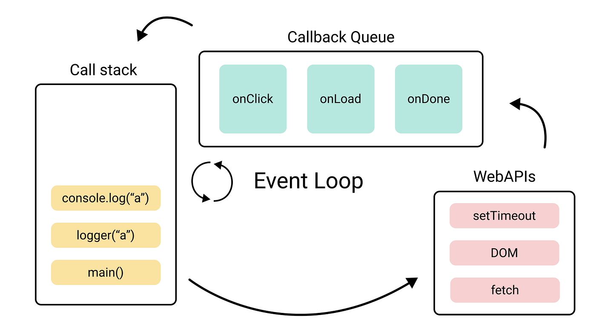
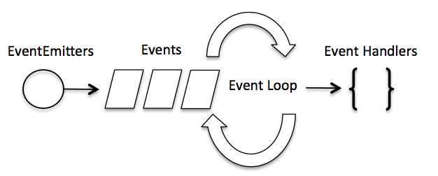

Node.js イベントループ
イベントループは Node.js が非ブロッキング I/O 操作を処理する中核メカニズムであり、シングルスレッドで複数の同時リクエストを効率的に処理できるようにします。
Node.js はシングルスレッドベースの JavaScript ランタイムであり、イベントループを利用してファイル読み取り、ネットワークリクエスト、データベースクエリなどの非同期操作を処理します。
イベントループにより、Node.js はコードをノンブロッキングで実行し、複数の接続を処理し、非同期 I/O 操作を実行できます。
イベントループにより、Node.js はスレッドをブロックすることなく大量の同時 I/O 操作を処理できます。これは Node.js が同時リクエストを効率的に処理するための鍵です。

イベントループの段階
イベントループは複数の段階に分かれており、各段階が特定のタスクを処理します。主要な段階は次のとおりです：
- Timers：実行
setTimeout()和setInterval()のコールバック。 - I/O Callbacks：遅延された I/O コールバックを処理する。
- Idle, prepare：内部で使用され、あまり一般的ではない。
- Poll：新しい I/O イベントを取得し、I/O 関連のコールバックを実行する。
- Check：実行
setImmediate()コールバック。 - Close Callbacks：クローズコールバックを処理します。例えば
socket.on('close', ...)。
イベントループの流れ
- タスクがイベントループキューに入る。
- イベントループは段階の順序に沿って処理を行い、各段階には独自のコールバックキューがあります。
- イベントループは
poll段階で新しいイベントの到着を待ち、イベントがない場合は他の段階のコールバックを確認します。 - もし
setImmediate()和setTimeout()が両方存在する場合、setImmediate()在check段階が先に実行され、setTimeout()在timers段階が実行されます。
例
console.log('Timeout callback');
}, 0);
setImmediate(() => {
console.log('Immediate callback');
});
console.log('Main thread execution');
出力順序：
Main thread execution先に出力されます。setImmediate()和setTimeout()の実行順序は現在のイベントループの状態に依存し、一般的にsetImmediate()が先に実行されます。
マクロタスクとマイクロタスク
- マクロタスク：
setTimeout、setInterval、setImmediate、I/O 操作など。 - マイクロタスク：
process.nextTick、Promise.then。
実行順序：マイクロタスクはマクロタスクよりも優先度が高く、現在の段階のコールバック終了後にすぐに実行されます。
例
console.log('Timeout callback');
}, 0);
Promise.resolve().then(() => {
console.log('Promise callback');
});
console.log('Main thread execution');
実行出力結果：
Main thread execution Promise callback Timeout callback
process.nextTick()
process.nextTick() は現在の操作が終了した後、次の段階が始まる前にマイクロタスクを実行します。優先度は Promise より高くなります。
例
console.log('Next tick callback');
});
console.log('Main thread execution');
出力：
Main thread execution Next tick callback
イベント駆動型プログラム
Node.js では、イベント駆動型プログラミングは主に EventEmitter クラスによって実装されます。
EventEmitter は events モジュール内の組み込みクラスです。EventEmitter を継承することで、独自のイベントエミッタを作成し、イベントの登録とトリガーを行うことができます。
このメカニズムにより、Node.js は非同期タスクを効率的に処理でき、シングルスレッド環境でも並行処理を実現できます。

イベント駆動の一連の流れはこのように実装されており、非常に簡潔です。これはオブザーバーパターンに似ています。イベントはテーマ（Subject）に相当し、このイベントに登録されたすべての処理関数はオブザーバー（Observer）に相当します。
基本概念：
- イベント：プログラム内で発生するアクションまたは状態の変化。例えば、ファイルの読み取り完了や HTTP リクエストの到着など。
- イベントトリガー：
EventEmitterNode.js の組み込みモジュールであり、イベントの発行と監視に使用されます。 - イベントハンドラー：イベントに関連付けられたコールバック関数で、イベント発生時に呼び出されます。
イベント駆動の流れ：
- イベントの登録：プログラム内で
EventEmitterインスタンスを使用してイベントと対応するハンドラーを登録します。 - イベントのトリガー：指定されたイベントが発生したとき、
EventEmitterそのイベントがトリガーされます。 - イベントの処理：イベントループは対応するコールバック関数をスケジュールしてタスクを実行します。
Node.js には複数の組み込みイベントがあります。events モジュールをインポートし、EventEmitter クラスをインスタンス化することで、イベントをバインドおよび監視できます。次の例のとおりです：
// 引入 events 模块
var events = require('events');
// 创建 eventEmitter 对象
var eventEmitter = new events.EventEmitter();
以下のプログラムはイベントハンドラーをバインドします：
// 绑定事件及事件的处理程序
eventEmitter.on('eventName', eventHandler);
プログラムを通じてイベントをトリガーできます：
// 触发事件
eventEmitter.emit('eventName');
例
hello.js ファイルを作成し、コードは次のとおりです：
例1
const myEmitter = new EventEmitter();
// イベントハンドラーを登録
myEmitter.on('greet', () => {
console.log('Hello, world!');
});
// イベントをトリガー
myEmitter.emit('greet');
出力：
Hello, world!
main.js ファイルを作成し、コードは次のとおりです：
例2
次に、上記のコードを実行してみましょう：
$ node main.js 连接成功。 数据接收成功。 程序执行完毕。
Node アプリケーションはどのように動作するのですか？
Node アプリケーションでは、非同期操作を実行する関数はコールバック関数を最後のパラメータとして受け取ります。コールバック関数は最初のパラメータとしてエラーオブジェクトを受け取ります。
次に、前述の例を改めて見てみましょう。input.txt を作成し、ファイルの内容は次のとおりです：
菜鸟教程官网地址：www.runoob.com
main.js ファイルを作成し、コードは次のとおりです：
var fs = require("fs");
fs.readFile('input.txt', function (err, data) {
if (err){
console.log(err.stack);
return;
}
console.log(data.toString());
});
console.log("程序执行完毕");
上記のプログラムでは、fs.readFile() はファイルを読み取るための非同期関数です。ファイルの読み取り中にエラーが発生すると、エラーオブジェクト err がエラーメッセージを出力します。
エラーが発生しなかった場合、readFile は err オブジェクトの出力をスキップし、ファイルの内容はコールバック関数を通じて出力されます。
上記のコードを実行すると、実行結果は次のとおりです：
程序执行完毕 菜鸟教程官网地址：www.runoob.com
次に input.txt ファイルを削除すると、実行結果は次のとおりです：
程序执行完毕 Error: ENOENT, open 'input.txt'
input.txt ファイルが存在しないため、エラーメッセージが出力されました。
その他の拡張
岳小弟
shu***zizuo2018@126.com
注：Node.js はシングルプロセス・シングルスレッドのアプリケーションですが、イベントとコールバックによって並行性をサポートしているため、パフォーマンスが非常に高いです。
シングルプロセス・シングルスレッドとは何か？ 読んですぐにサンプルを打ち込んでみても、結局どういう意味か理解できません。この問題を説明するには、プロセスとは何か、スレッドとは何かを説明する必要があります。
プロセス：CPU がタスクを実行するモジュール。スレッド：モジュール内の最小単位。
例を挙げると、CPU を私たち一人ひとりに例えます。食事の時間になり、多くの料理（CPU 内のプロセス）を注文できます：宮保鶏丁、魚香肉絲、酸辣土豆丝。各料理が具体的に何を含むか（CPU の各プロセス内のスレッド）：宮保鶏丁（詳細：キュウリ、ニンジン、鶏肉、ピーナッツ）。その詳細が宮保鶏丁という料理を構成し、食べると空腹になりません。すると仕事ができます。CPU のプロセス内のスレッドも同様です。スレッドが自身の内容を完了し、結果をプロセスに返し、プロセスが CPU に返すとき、CPU は日常の要求を処理できます。
岳小弟
shu***zizuo2018@126.com
lu
bai***tar@gmail.com
まずイベントについて説明します
イベントとは、必要なのはeventEmitter.onイベントをバインドするために、を通じてeventEmitter.emitこのイベントをトリガーすることです。次に言うのは、イベントの受信 和 発生は分かれています。例えば、出前店では絶えず多くの注文を受け付けることができ、受け付けた後で料理人に作るよう伝えます。できあがった出前は各ユーザーに配送します。シングルスレッドの場合は、1つの注文を受け取り、完成した後に次の出前注文を受け取るだけなので、明らかに効率が非常に低いです。
イベントは絶えず受け付け、絶えず発生させることができるのも、効率を上げるためです。
lu
bai***tar@gmail.com
Java开发老菜鸟
sam***@foxmail.com
1、eventEmitter.emit はイベント（イベントリクエスト）をトリガーし、eventEmitter.on はイベントを処理するハンドラー（イベント処理）をバインドします。イベントのリクエストと処理は分離されているため、非同期です。
2、以下の2つの例を一緒に書いて実行すると：
//例子1 var fs = require("fs"); fs.readFile('text.txt', function(err, data) { if (err) return console.error(err); console.log(data.toString()); console.log("end"); console.log("***********************"); }); //例子2 var events = require("events"); var eventEmitter = new events.EventEmitter(); var connectHandler = function connected() { console.log("connnect successfully !"); eventEmitter.emit("after_connect"); } eventEmitter.on("connected", connectHandler); eventEmitter.on('after_connect', function() { console.log("after connect"); }); eventEmitter.emit("connected"); console.log("event emitter end");例2が先に出力され、例1が後から出力されることがわかります。これにより非同期であることを検証できます。例1はIO処理が必要で所要時間が長いのに対し、例2は情報を直接出力するため所要時間が短く、両方がほぼ同時に実行される場合、例2が先に実行完了します。
Java開発の古参初心者
sam***@foxmail.com
韓非
171***818@qq.com
イベント処理の例の実行順序は次のとおりです：
var events = require('events'); var eventEmitters = new events.EventEmitter(); var connectHandle = function connected(){ console.log('再执行eventHandle'); eventEmitters.emit('data-receive') } eventEmitters.on('data-receive',function(){ console.log('最后接收数据'); }) eventEmitters.on('connection',connectHandle); console.log('先执行connection'); eventEmitters.emit('connection'); console.log('程序处理完成');韓非
171***818@qq.com
junwind
865***609@qq.com
この記事では、定義された匿名関数が関数名を使用していますが、実際には付けない方が良いです：
var connectHandler = function () { console.log('连接成功。'); eventEmitter.emit('data_received'); } eventEmitter.on('connection', connectHandler);//注册一个connection事件，connectHandler为其处理程序または、直接これを使用します：
eventEmitter.on('connection', function () { console.log('连接成功。'); eventEmitter.emit('data_received'); });junwind
865***609@qq.com